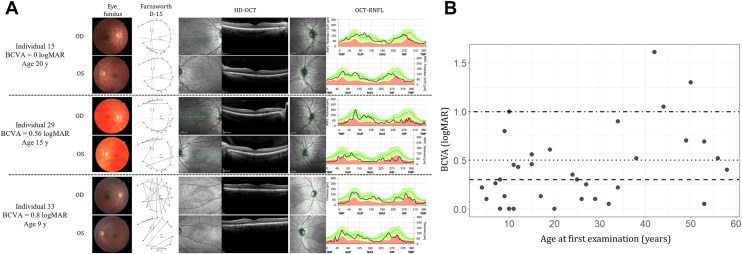

1627 — Người mang OPA1 không triệu chứng / Asymptomatic OPA1 carriers: theo dõi, tầm soát gia đình & tư vấn
Tags: pattern:teo-thi pattern:di-truyen-troi vung:than-kinh-thi protocol:OCT-RNFL-GCL score:OCT-GCL protocol:thi-truong-Humphrey protocol:audiometry protocol:MLPA-OPA1 score:logMAR
Mức chắc chắn (certainty): tổng hợp y văn (literature synthesis) — nhóm tự biên từ: gia đình OPA1 lớn nhất đã báo cáo (34 người mang, Ophthalmology Science 2026, CC BY 4.0, PMC13382307); 108 bệnh nhân OPA1-ADOA (IOVS 2026, CC BY-NC-ND 4.0, PMC13069346); 8 gia đình OPA1 có điếc (Genes 2026, CC BY 4.0, PMC13025685); kiểu hình mắt–tai OPA1 (Orphanet J Rare Dis 2025, CC BY 4.0, PMC12534986); tổng quan bệnh thần kinh thị di truyền (IJMS 2025, CC BY 4.0, PMC12027957).
Vì sao bài này quan trọng: bài 479 trả lời "biến thể này có bệnh không"; bài 437/439 dạy nhận diện DOA. Nhưng câu hỏi hay gặp nhất trong phòng khám lại khác: "Mẹ/chị tôi bị teo thị do OPA1, tôi xét nghiệm cũng mang gen nhưng nhìn vẫn bình thường — tôi có bệnh không, con tôi có sao không?" Câu trả lời "không sao" là sai ở khoảng 30% người mang (không hoàn toàn thấm), và sai nguy hiểm vì tổn thương RNFL/GCL có thể đã có trước khi thị lực giảm.
1. Tổng quan — vì sao "mang gen mà không triệu chứng" vẫn là bệnh đang tiến triển
- OPA1 (3q28–q29) mã hóa GTPase màng trong ty thể điều khiển dung hợp ty thể (mitochondrial fusion). Tế bào hạch võng mạc (RGC) — nhất là bó nhú–hoàng điểm (papillomacular bundle) — có axon không myelin trong võng mạc và mật độ ty thể rất cao, nên nhạy nhất với suy giảm năng lượng: mất RGC trước, teo đĩa sau.
- Hai cơ chế → hai mức nặng:
- Haploinsufficiency (biến thể cắt ngắn/mất đoạn): mất một bản sao → giảm lượng protein → thể nhẹ hơn.
- Dominant-negative (missense vùng GTPase): protein hỏng kéo theo protein bình thường → thể nặng hơn. Trong 108 bệnh nhân: missense có BCVA 0,83 vs 0,49 logMAR (p = 0,016), pRNFL 52,41 vs 66,41 µm (p < 0,001), mGCL 20,12 vs 21,97 µm (p = 0,044) so với haploinsufficiency (PMC13069346).
- "Không hoàn toàn thấm" nghĩa là gì (định lượng):
- DOA không hội chứng: độ thấm ~70% → khoảng 30% người mang không có biểu hiện lâm sàng ở thời điểm khám; DOA-plus: độ thấm ~100% (tổng quan PMC12027957). Con số này giải thích vì sao cùng một gia đình có người mù nhiều, người chỉ 20/25.
- Trong gia đình 34 người mang một mất đoạn 10-kb OPA1: BCVA từ 0 (20/20, không triệu chứng) đến 1,61 logMAR (20/815); 15/34 (44%) không suy giảm thị lực (BCVA < 0,3 logMAR) ở lần khám đầu (PMC13382307).
- Nhưng cấu trúc đã hỏng: OCT ở gia đình này cho thấy RNFL và GCL mỏng ngay cả ở người "nhìn tốt"; BCVA tương quan mạnh với RNFL (r = −0,50 đến −0,73) và GCL (r = −0,82 đến −0,86) (PMC13382307).
- Tốc độ tiến triển (để tư vấn, không để hứa):
- BCVA giảm 0,018 logMAR/năm (0,18 logMAR/thập kỷ); RNFL mất 1,13 µm/năm ở thái dương, 0,70 µm/năm trên, 0,50 µm/năm dưới; vùng mũi không đổi; bệnh tiến triển nhanh hơn trước 30 tuổi và nhanh hơn ở nữ (PMC13382307).
- 108 bệnh nhân: mGCL mất 0,26 ± 0,10 µm/năm; mỗi 3,2 µm mGCL mất tương ứng 0,1 logMAR xấu đi (PMC13069346).
- Hệ quả thực hành: theo dõi bằng cấu trúc (OCT), không chỉ bằng thị lực — mất 3,2 µm GCL có thể chỉ là 1 dòng logMAR, trong khi bệnh nhân vẫn "thấy bình thường".
- Dịch tễ: ADOA do OPA1 chiếm 50–70% teo thị trội; ADOA 1/10.000–1/50.000 (PMC13410010; PMC12027957). OPA1 là gen phổ biến nhất trong teo thị di truyền nhân (53,25% cohort 826 gia đình, PMC12073998).
2. Mẫu hình + gamut: 4 kiểu "người mang" và các bệnh giả teo thị
- Kiểu A — mang gen, hoàn toàn bình thường: VA 20/20, OCT trong giới hạn tuổi. Vẫn 50% nguy cơ cho con.
- Kiểu B — mang gen, dưới lâm sàng (subclinical): VA 20/20 nhưng RNFL thái dương/GCL mỏng so với chuẩn tuổi; có thể chỉ giảm sắc giác nhẹ hoặc thị trường trung tâm nhẹ.
- Kiểu C — DOA nhẹ: VA 20/25–20/40, teo đĩa thái dương, ám điểm trung tâm.
- Kiểu D — DOA-plus: thêm điếc tiếp âm, ataxia, myopathy, bệnh thần kinh ngoại biên, CPEO; 20% ADOA có biểu hiện ngoài mắt, gặp nhiều hơn ở missense và ở biến thể di truyền từ mẹ (PMC12027957).
- Gamut của "người nhà bệnh nhân teo thị, không triệu chứng": OPA1 (hàng đầu) · LHON carrier mẹ (đáy mắt có thể telangiectasia/đĩa sung huyết) · WFS1 trội (điếc trước, OPL lamination) · AFG3L2/SPG7 · đĩa thị drusen (giả teo thị) · glaucoma góc mở sớm (mỏng RNFL theo vùng, không thái dương) · chèn ép thị thần kinh tiến triển chậm (meningioma) · độc–chuyển hóa (ethambutol, B12, thuốc lá–rượu).
- Nguyên tắc: "không triệu chứng" là trạng thái lâm sàng, không phải trạng thái phân tử — người mang vẫn có thể có tổn thương cấu trúc và vẫn truyền bệnh.
3. Bảng so sánh phân biệt (ma trận đối chiếu)
| Thực thể (entity) | Hình ảnh / lâm sàng điển hình | Chốt vào (rule-in) | Chốt loại (rule-out) | Gợi ý xác nhận |
|---|---|---|---|---|
| OPA1 — người mang dưới lâm sàng | VA 20/20, RNFL thái dương mỏng, GCL mỏng; bố/mẹ/anh chị bị DOA | Biến thể OPA1 P/LP + RNFL/GCL dưới bách phân vị 1 theo tuổi + phân ly gia đình | OCT hoàn toàn bình thường + không ai trong nhà bị → chưa quy bệnh, nhưng không loại trừ (độ thấm 70%) | OPA1 giải trình tự + MLPA/CNV; OCT cùng máy; audiogram |
| OPA1 — DOA rõ | Teo đĩa thái dương, VA giảm, ám điểm trung tâm, sắc giác xanh–vàng | RNFL thái dương + GCL thái dương mỏng + biến thể P/LP | OPL lamination + sắc giác đỏ–lục → WFS1 | OCT RNFL/GCL; VF 30-2; ERG/VEP |
| OPA1 — DOA-plus | DOA + điếc tiếp âm/ataxia/myopathy/CPEO | Biểu hiện ngoài mắt + missense GTPase | Điếc bẩm sinh + ĐTĐ sơ sinh → WFS1 nặng (bài 499) | Audiogram/ABR; EMG; MRI não–tủy |
| LHON carrier (mtDNA) | Thường nam trẻ, mất thị lực cấp tuần tự; carrier có thể đĩa sung huyết/telangiectasia | 3 đột biến 11778/14484/3460 + di truyền mẹ | Teo thị từ từ hai bên nhiều năm + RNFL thái dương đối xứng → OPA1 | mtDNA; OCT đĩa thị; FA |
| AD WFS1-OA | Điếc 2 tuổi trước teo thị 10 tuổi; OPL lamination; RNFL mỏng lan tỏa | OPL lamination + sắc giác đỏ–lục + điếc sớm | RNFL chỉ thái dương + OPL bình thường → OPA1 | WFS1; OCT; audiogram |
| Drusen đĩa thị (giả teo thị) | Đĩa gồ cao, bờ không rõ, siêu âm có tăng âm, OCT "lumpy bumpy" dưới RPE | OCT EDI thấy drusen + siêu âm B tăng âm | Teo đĩa phẳng, RNFL mỏng thật → DOA/glaucoma | OCT EDI đĩa thị; siêu âm B |
| Glaucoma góc mở sớm | Mỏng RNFL theo vùng (thường trên/dưới), IOP cao/đĩa lõm, thị trường theo vùng | IOP + lõm đĩa + RNFL mất theo vùng kinh điển | Mất RNFL thái dương đối xứng + không lõm → OPA1 | IOP, gonioscopy, VF, OCT |
| Chèn ép thị thần kinh tiến triển chậm | Giảm thị lực một bên, RAPD, đau/không đau, teo đĩa muộn | MRI thấy khối/hẹp ống thị giác | Hai bên đối xứng + gia đình trội → OPA1 | MRI hốc mắt–não có cản quang |
 Phả hệ và audiogram 8 gia đình mang biến thể OPA1: nửa trái đen = điếc, nửa phải xám = teo thị — nhiều người chỉ có một trong hai biểu hiện, có người không biểu hiện, minh họa biểu hiện biến thiên trong cùng gia đình. Nguồn: Kawakita M et al., Genes 2026, Fig. 1 (PMC13025685), CC BY 4.0.
Phả hệ và audiogram 8 gia đình mang biến thể OPA1: nửa trái đen = điếc, nửa phải xám = teo thị — nhiều người chỉ có một trong hai biểu hiện, có người không biểu hiện, minh họa biểu hiện biến thiên trong cùng gia đình. Nguồn: Kawakita M et al., Genes 2026, Fig. 1 (PMC13025685), CC BY 4.0.

A: ba người mang cùng mất đoạn OPA1 với BCVA 0,16 / 0,56 / 0,8 logMAR — đáy mắt, sắc giác D-15, OCT hoàng điểm và bản đồ RNFL cho thấy mức mỏng khác nhau. B: BCVA theo tuổi ở 34 người mang, phân tán rất rộng (0–1,61 logMAR). Nguồn: Bouzidi A et al., Ophthalmol Sci 2026, Fig. 3 (PMC13382307), CC BY 4.0.4. Protocol — khám ai, đo gì, bao lâu một lần
Bước 1 — chỉ định xét nghiệm (cascade):
- Người thân bậc 1 của người đã có biến thể OPA1 P/LP: tư vấn + xét nghiệm khi họ muốn biết (không xét nghiệm thay họ). Trẻ < 18 tuổi: hoãn xét nghiệm dự báo nếu chưa có can thiệp — bệnh chưa có điều trị đặc hiệu, lợi ích chủ yếu là theo dõi; quyết định theo gia đình + tư vấn di truyền.
- Không có biến thể trong nhà: vẫn khám mắt–tai–thần kinh trước khi kết luận "không mang"; nếu âm tính, không loại trừ khả năng có biến thể khác (OPA3, AFG3L2, SPG7…).
- Bắt buộc tìm CNV/mất đoạn: gia đình lớn nhất được phát hiện nhờ mất đoạn 10-kb exon 30–31 — giải trình tự thường bỏ sót; phải có MLPA/CNV calling (PMC13382307).
Bước 2 — bộ đánh giá nền (baseline) cho người mang:
- Thị lực logMAR + khúc xạ; sắc giác Lanthony D-15; thị trường 30-2 (Humphrey SITA) khi hợp tác.
- OCT pRNFL + macular GCL/GCIPL cùng một máy — không so trend giữa hai hãng máy khác nhau.
- Đáy mắt giãn đồng tử; OCT EDI đĩa thị nếu nghi drusen; siêu âm B nếu đĩa gồ.
- ERG/VEP khi VA và OCT không khớp (nghi bệnh võng mạc, ANSD, tổn thương thần kinh sau).
- Audiogram/ABR nền (DOA-plus 20%); khám thần kinh–cơ (yếu cơ, ataxia, hạn chế vận nhãn).
- MRI hốc mắt–não có cản quang nếu: một bên, RAPD, đau, tiến triển nhanh, hoặc OCT không điển hình.
Bước 3 — ngưỡng gọi "dưới lâm sàng" (thực hành):
- RNFL/GCL < bách phân vị 1 của chuẩn tuổi/máy → bất thường rõ, coi như có bệnh cấu trúc dù VA 20/20.
- 1–5 bách phân vị hoặc bất đối xứng > 10 µm giữa hai mắt → nghi ngờ, lặp lại 3–6 tháng cùng máy.
- > 5 bách phân vị và đối xứng → trong giới hạn; vẫn không loại trừ nguy cơ (độ thấm 70%).
- Ghi rõ đây là ngưỡng thực hành suy luận, chưa có guideline quốc tế riêng cho "carrier".
Bước 4 — lịch theo dõi:
- Năm đầu sau phát hiện: khám mỗi 6–12 tháng (VA, OCT, VF nếu làm được).
- Ổn định 2 lần liên tiếp: mỗi 1–2 năm; nhanh hơn (6 tháng) nếu gần ngưỡng, có triệu chứng mới, hoặc < 30 tuổi (bệnh tiến triển nhanh hơn trước 30 — PMC13382307).
- Tai–thần kinh: audiogram mỗi 2–3 năm; khám thần kinh mỗi lần khám mắt.
- Tư vấn sinh sản: 50% cho mỗi con bất kể người mang có triệu chứng hay không; không hứa "con sẽ nhẹ như bố/mẹ" vì biểu hiện biến thiên trong cùng gia đình (BCVA 0–1,61 logMAR).
flowchart TD
A[Nguoi than bac 1 cua benh nhan OPA1] --> B{Tuoi duoi 18?}
B -->|Co| C[Tu van di truyen - hoan xet nghiem du bao neu chua co can thiep]
B -->|Khong| D[Xet nghiem OPA1: giai trinh tu + MLPA/CNV]
D --> E{Co bien the P/LP?}
E -->|Khong| F[Khong mang - nhung van kham mat tai than kinh mot lan]
E -->|Co| G[Baseline: VA logMAR, sac giac, thi truong 30-2, OCT pRNFL + GCL, audiogram, kham than kinh]
G --> H{OCT duoi bach phan vi 1 hoac bat doi xung tren 10 micromet?}
H -->|Co| I[Co benh cau truc duoi lam sang - theo doi 6-12 thang]
H -->|Khong| J[Mang gen chua co ton thuong - theo doi 12 thang]
I --> K[Tu van 50 phan tram cho con + bao hiem lai xe nghe nghiep]
J --> K
K --> L[Lap lai OCT cung may - khong so trend giua hai hang may]
5. Biến thể bình thường và cạm bẫy
- Cạm bẫy 1 — "VA 20/20 là không bệnh". 44% người mang trong gia đình lớn có BCVA < 0,3 logMAR nhưng RNFL/GCL đã mỏng; mất 3,2 µm GCL chỉ tương ứng 0,1 logMAR — dưới ngưỡng bệnh nhân nhận ra.
- Cạm bẫy 2 — "Không triệu chứng thì không cần theo dõi". Độ thấm ~70% nghĩa là 30% người mang chưa biểu hiện ở thời điểm khám, không phải sẽ không bao giờ biểu hiện.
- Cạm bẫy 3 — gọi mọi mỏng RNFL thái dương là DOA. Drusen đĩa thị (OCT EDI "lumpy bumpy", siêu âm tăng âm) và glaucoma (mất theo vùng, lõm đĩa) là 2 bệnh giả teo thị hay gặp; myopia làm đĩa nghiêng, dễ đọc sai.
- Cạm bẫy 4 — so OCT giữa hai máy/khác phần mềm. Ngưỡng và cách segmentation khác nhau → "mỏng 8 µm" có thể chỉ là đổi máy. Luôn theo dõi cùng máy hoặc hiệu chuẩn.
- Cạm bẫy 5 — xét nghiệm dự báo ở trẻ nhỏ mà không tư vấn. Không có điều trị đặc hiệu; không biến trẻ thành "bệnh nhân" khi chưa có lợi ích rõ — quyết định của gia đình sau tư vấn.
- Cạm bẫy 6 — bỏ qua DOA-plus. Hỏi điếc, yếu cơ, đi lại, nhìn đôi; audiogram nền và khám thần kinh–cơ. 20% ADOA có biểu hiện ngoài mắt; missense nặng hơn.
- Cạm bẫy 7 — hứa con "chỉ bị nhẹ". Cùng một biến thể trong một gia đình cho BCVA 0–1,61 logMAR; tư vấn theo khoảng, không theo ca tốt nhất.
- Cạm bẫy 8 — bỏ sót mất đoạn lớn. Giải trình tự âm không loại trừ deletion OPA1; phải có MLPA/CNV (mất đoạn 10-kb exon 30–31 trong PMC13382307).
 A: đáy mắt teo đĩa thái dương hai bên (mũi tên). B: ERG scotopic/photopic giảm biên độ. C: flash-VEP giảm/trễ. Đây là bộ ba cấu trúc – chức năng dùng để phân biệt teo thị thật với giả teo thị. Nguồn: Wang H et al., Orphanet J Rare Dis 2025, Fig. 3 (PMC12534986), CC BY 4.0.
A: đáy mắt teo đĩa thái dương hai bên (mũi tên). B: ERG scotopic/photopic giảm biên độ. C: flash-VEP giảm/trễ. Đây là bộ ba cấu trúc – chức năng dùng để phân biệt teo thị thật với giả teo thị. Nguồn: Wang H et al., Orphanet J Rare Dis 2025, Fig. 3 (PMC12534986), CC BY 4.0.
6. Tự lượng giá — Blind Quiz
Ca 1 — Nữ 28 tuổi, mẹ bị "teo thị di truyền" và đã mù một phần. Chị xét nghiệm OPA1: mang cùng biến thể. Thị lực 20/20 hai mắt, không than phiền gì. Chị hỏi: "Vậy tôi không bị bệnh đúng không?"
- Hỏi: câu trả lời đúng? Cần đo gì ngay? Điều gì không được hứa?
Bấm để hiện đáp án (findings + chẩn đoán)
- Không được nói "không bệnh". Mang biến thể OPA1 = nguy cơ bệnh, độ thấm ~70%; 44% người mang trong một gia đình lớn có BCVA < 0,3 logMAR nhưng RNFL/GCL đã mỏng.
- Đo ngay: OCT pRNFL + GCL cùng máy, sắc giác Lanthony D-15, thị trường 30-2, audiogram (DOA-plus), khám thần kinh–cơ.
- Ngưỡng: < bách phân vị 1** = bất thường rõ; **1–5** hoặc **bất đối xứng > 10 µm = nghi ngờ, lặp lại 3–6 tháng.
- Không hứa: "con sẽ nhẹ như mẹ/chị", "mắt sẽ không tiến triển" — cùng biến thể có thể cho 0–1,61 logMAR; 50% nguy cơ cho con.
- Nguồn: PMC13382307; PMC13069346; PMC12027957.
Ca 2 — Nam 45 tuổi, mang OPA1, VA 20/25 hai mắt, OCT RNFL thái dương 62 µm (bách phân vị 3), GCL bình thường. Anh hỏi có cần khám lại không và bao lâu.
- Hỏi: xếp loại gì? Lịch theo dõi? Dấu hiệu nào khiến phải khám nhanh hơn?
Bấm để hiện đáp án (findings + chẩn đoán)
- Nghi ngờ dưới lâm sàng (RNFL 3rd percentile, GCL bình thường): lặp OCT 3–6 tháng cùng máy; nếu xác nhận mỏng tiến triển → theo dõi 6–12 tháng.
- Lịch nền: 12 tháng/lần (VA, OCT, VF), audiogram 2–3 năm, khám thần kinh mỗi lần; nhanh hơn nếu < 30 tuổi vì bệnh tiến triển nhanh hơn trước 30 (PMC13382307).
- Khám nhanh hơn nếu: thị lực giảm, sắc giác xấu đi, đau, một bên, RAPD, điếc/yếu cơ mới — loại trừ chèn ép/DOA-plus.
- Tư vấn: 50% cho con; không có điều trị đặc hiệu — theo dõi + phục hồi chức năng thị giác.
Ca 3 — Bé gái 9 tuổi, bố bị DOA do OPA1. Mẹ muốn xét nghiệm gen cho con ngay "để biết". Khám mắt bình thường, OCT bình thường.
- Hỏi: có nên xét nghiệm dự báo ngay? Lợi ích/nguy cơ? Nếu gia đình vẫn muốn, cần tư vấn gì?
Bấm để hiện đáp án (findings + chẩn đoán)
- Không cấp thiết: bệnh không có điều trị đặc hiệu, khởi phát ở tuổi học đường, kết quả dương không đổi hành động ngay nhưng có thể gây dán nhãn tâm lý; nhiều hướng dẫn di truyền hoãn xét nghiệm dự báo ở trẻ vị thành niên khi không có lợi ích y khoa rõ.
- Lợi ích: lập kế hoạch theo dõi sớm, chuẩn bị tâm lý; nguy cơ: lo lắng, ảnh hưởng học tập/bảo hiểm, không phát hiện được người sẽ không bệnh (độ thấm 70%).
- Nếu vẫn muốn: tư vấn trước xét nghiệm (mục đích, khả năng âm/dương, 50% nguy cơ, biểu hiện biến thiên), không xét nghiệm sàng lọc anh chị em ngoài ý muốn; theo dõi mắt hằng năm dù chưa xét nghiệm.
Bài liên quan chéo
- 479 – Tư vấn di truyền & xử lý VUS OPA1/WFS1 (ACMG/AMP, phân ly, tiền sản)
- 437 – Teo thị kèm điếc: DOA+/OPA1 & WFS1 trội
- 439 – Teo thị di truyền: DOA/OPA1 & Wolfram
- 440 – Theo dõi & điều trị teo thị di truyền
- 499 – Hattersley–Urano & phổ WFS1 trội
- 498 – Kearns–Sayre & CPEO (bệnh ty thể, hạn chế vận nhãn)
- 400 – Tổng quan Mắt & thị giác
Ảnh
1627_opa1-carrier_PEDIGREE_PMC13025685-Fig1-CCBY.jpg— Kawakita M et al., Genes 2026, Fig. 1 (PMC13025685), CC BY 4.0.1627_opa1-carrier_OCT_PMC13382307-Fig3-CCBY.jpg— Bouzidi A et al., Ophthalmol Sci 2026, Fig. 3 (PMC13382307), CC BY 4.0.1627_opa1-carrier_FUNDUS-ERG_PMC12534986-Fig3-CCBY.jpg— Wang H et al., Orphanet J Rare Dis 2025, Fig. 3 (PMC12534986), CC BY 4.0.- Chi tiết giấy phép từng ảnh trong
images/CREDITS.md. Không tải ảnh từ EyeWiki/AuntMinnie (chỉ dẫn link).
Không dùng để chẩn đoán độc lập khi chưa có người hướng dẫn.